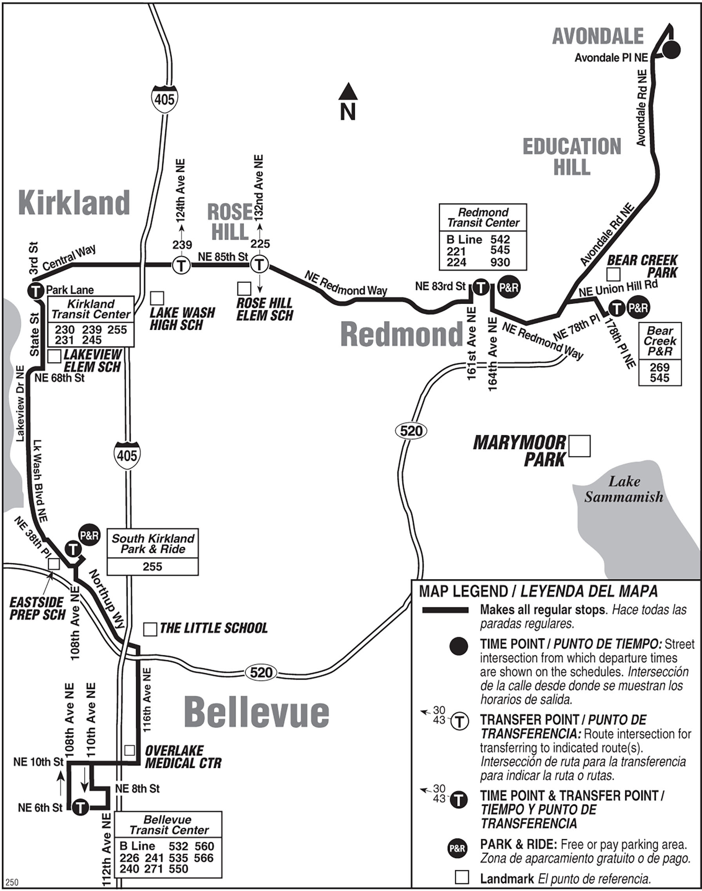
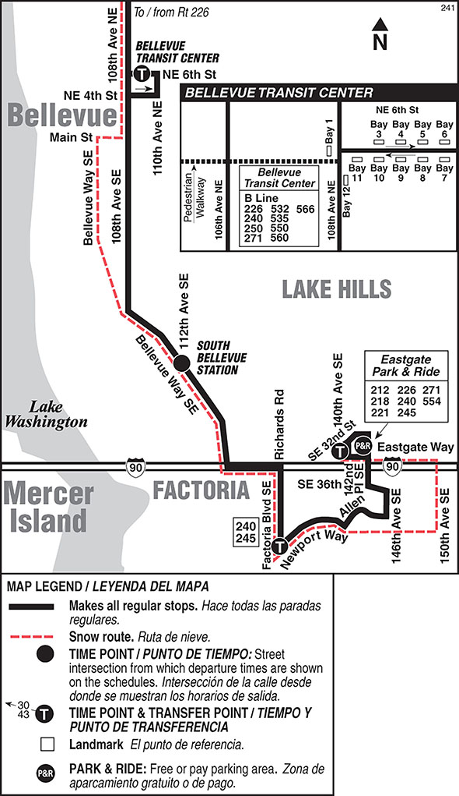
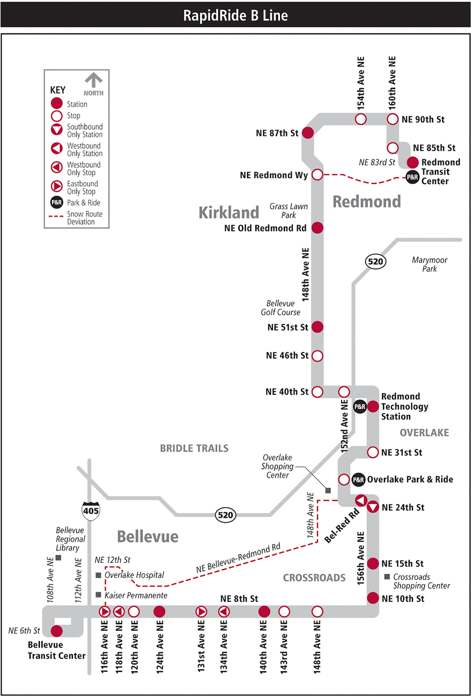
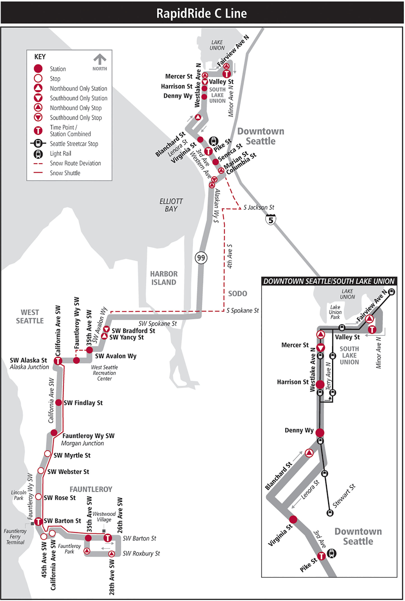
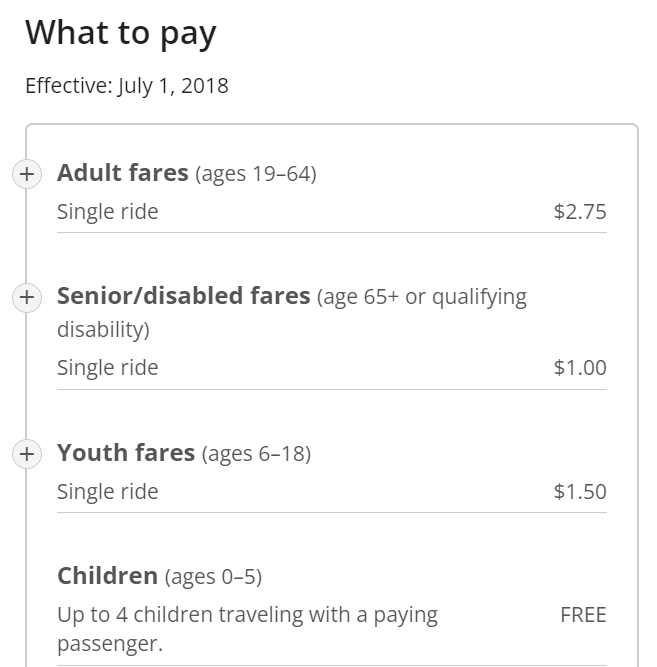

Here you can find some of the options for public transport in King County: bus schedules and fares.
To find a specific metro map or schedule, visit this site.
We've included four maps in areas near EPS:
| Bellevue: | EPS: | Eastside: | Downtown Seattle: |
|

|

|

|

|
If you do ride the metro, here's a video on etiquette and safety:
(Note: this video is from 2011 and is not updated to include COVID policies. Please wear a mask on the bus!)
|
The bus fare depends on your age and ability: |
 |